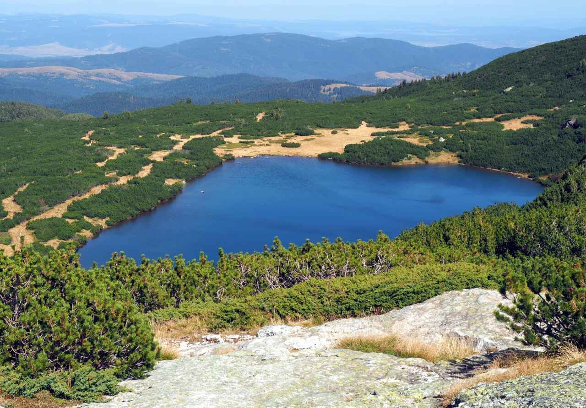

The Seven Rila Lakes are an iconic natural attraction in Bulgaria, located in the northwestern part of the Rila Mountains. The unique charm of mountain landscapes and the calming power of beautiful bodies of water attract many tourists from different countries. Many people are not afraid of the need to climb to lakes that are located at some distance from each other. You can visit the attraction as part of an excursion group assembled by a travel agency or on your own. The formation of 7 Rila lakes is associated with the activity of glaciers. The reservoirs are located in a glacial pit and are surrounded by mountain peaks. The names given to the lakes are related to their natural features. The highest lake of the group is Sylzata (Tear), located under the Otovish peak. It is situated at an altitude of 2535 meters above sea level; it received its name due to the purity and transparency of its waters.
 Below is Lake Okoto (Eye), so named because of its oval shape; its water is said to take on a rich blue hue in clear weather. It is also notable for being the deepest of the group, with a depth of 37.5 meters. Another lake is called Babreka or Kidney. It is associated with the shape of the reservoir. It is impossible to get very close to it due to the steep rocky shores. Below is Lake Bliznaka (Twins), the largest of them in terms of area. It has a narrowing in the middle, which is why, in dry years, it turns into two bodies of water similar to each other, hence its name. Trefoil or Trefoil is located at an altitude of 2216 meters above sea level, so called due to its irregular shape, from a height resembling a clover leaf. Its low banks make this similarity even stronger. Below it is Ribnoto Ezero (Fish Lake), which has the shallowest depth among the Rila Lakes. The pond was nicknamed because it contains a large number of fish. Below all of them lies Dolnoto Ezero (Lower Lake), and the waters of the other lakes flow into it.
The most favourable time for travelling to the lakes is summer; the most tourists here are in July and August, especially on weekends. In the summer months, all lakes are free of ice, which allows you to see them in all their glory. Comfortable closed shoes and clothing that do not restrict movement are recommended for visiting. It’s worth taking a windbreaker with you, as the weather is cooler at higher altitudes, and it can also rain suddenly. Tourists are advised to bring sunglasses and sunscreen to avoid getting sunburned. In addition, you should put food and water in your backpack.